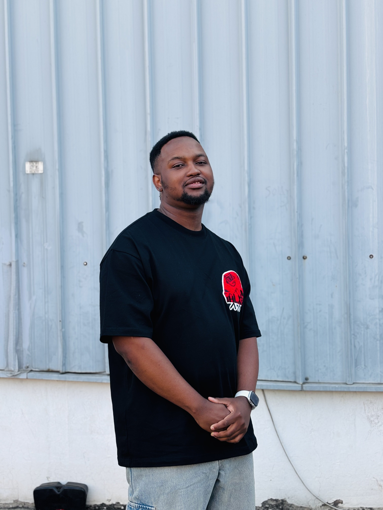

Dedicated Computer Engineering student with a strong foundation in software development, networking, and project management. Passionate about contributing to innovative projects and gaining hands-on experience through an internship opportunity.
Budapest University of Technology and Economics
Bachelor of Science in Computer Science Engineering
2023-2027
Majors: Computer and Software Engineering
Northam Boosendal Mine
January 2022 - January 2023
Turning Point Tutors
January 2020 - January 2022
Proficient in Python, C++, Java, JavaScript, HTML, CSS; Intermediate in Assembly, VHDL, Verilog
Cisco Certified (LAN setup, network troubleshooting, performance monitoring)
Git, Qt, Trello, Project Management Tools
Microcontroller system implementation, hardware configuration
Proficient in Microsoft Word, Microsoft Excel and Microsoft Powerpoint